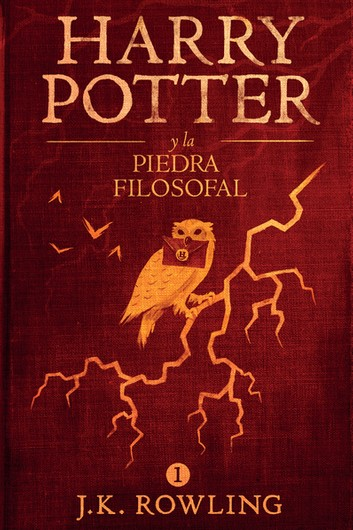

Catálogo
Harry Potter y la piedra filosofal
Autor: J.K.Rowling
Precio: 14,99€
Idioma: Español
Número de páginas: 256
ISBN: 8478884459
Editorial: Salamandra
Año: 2009
Sinopsis: Harry Potter se ha quedado huérfano y vive en casa de sus abominables tíos y del insoportable primo Dudley. Harry se siente muy triste y solo, hasta que un buen día recibe una carta que cambiará su vida para siempre. En ella le comunican que ha sido aceptado como alumno en el colegio interno Hogwarts de magia y hechicería. A partir de ese momento, la suerte de Harry da un vuelco espectacular. En esa escuela tan especial aprenderá encantamientos, trucos fabulosos y tácticas de defensa contra las malas artes. Se convertirá en el campeón escolar de quidditch, especie de fútbol aéreo que se juega montado sobre escobas, y se hará un puñado de buenos amigos, aunque también algunos temibles enemigos. Pero sobre todo, conocerá los secretos que le permitirán cumplir con su destino. Pues, aunque no lo parezca a primera vista, Harry no es un chico común y corriente. Es un verdadero mago.

Harry Potter y la cámara secreta
Autor: J.K.Rowling
Precio: 15,99€
Idioma: Español
Número de páginas: 288
ISBN: 849838267X
Editorial: Salamandra
Año: 2010
Sinopsis: Un elfo aparece en su habitación y le advierte que una amenaza mortal se cierne sobre la escuela. Así pues, Harry no se lo piensa dos veces y, acompañado de Ron, su mejor amigo, se dirige a Hogwarts en un coche volador. Pero ¿puede un aprendiz de mago defender la escuela de los malvados que pretenden destruirla?
Harry Potter y el prisionero de Azkabán
Autor: J.K.Rowling
Precio: 16,99€
Idioma: Español
Número de páginas: 360
ISBN: 8498383439
Editorial: Salamandra
Año: 2011
Sinopsis: Harry se pelea con su bigotuda tía Marge, a la que convierte en un globo, y debe huir en un autobús mágico. Mientras tanto, de la prisión de Azkabán se ha escapado un terrible villano, Sirius Black, un asesino en serie con poderes mágicos.
Harry Potter y el cáliz de fuego
Autor: J.K.Rowling
Precio: 17,99€
Idioma: Español
Número de páginas: 640
ISBN: 8498383447
Editorial: Salamandra
Año: 2012
Sinopsis: Tras otro abominable verano con los Dursley, Harry se dispone a iniciar el cuarto curso en Hogwarts, la famosa escuela de magia y hechicería. A sus 14 años, a Harry le gustaría ser un joven mago como los demás.
Harry Potter y la orden del fénix
Autor: J.K.Rowling
Precio: 18,99€
Idioma: Español
Número de páginas: 893
ISBN: 8498383625
Editorial: Salamandra
Año: 2013
Sinopsis: Las tediosas vacaciones de verano en casa de sus tíos todavía no han acabado y Harry se encuentra más inquieto que nunca. Apenas ha tenido noticias de Ron y Hermione, y presiente que algo extraño está sucediendo en Hogwarts.

Harry Potter y el misterio del príncipe
Autor: J.K.Rowling
Precio: 19,99€
Idioma: Español
Número de páginas: 608
ISBN: 8498383633
Editorial: Salamandra
Año: 2014
Sinopsis: Sexto curso del famoso mago en la escuela Hogwarts en donde se dará una lucha constante entre el bien y el mal, y en la que la vida de alguno de los personajes se verá en dificultades.

Harry Potter y las reliquias de la muerte
Autor: J.K.Rowling
Precio: 20,99€
Idioma: Español
Número de páginas: 640
ISBN: 8498383641
Editorial: Salamandra
Año: 2015
Sinopsis: Harry tiene que realizar una tarea siniestra, peligrosa y aparentemente imposible: el de localizar y de destruir a Horcruxes. Harry nunca se sintió tan sólo ni se enfrentó a un futuro tan incierto. Pero Harry debe encontrar la fuerza necesaria para terminar la tarea que le han dado.